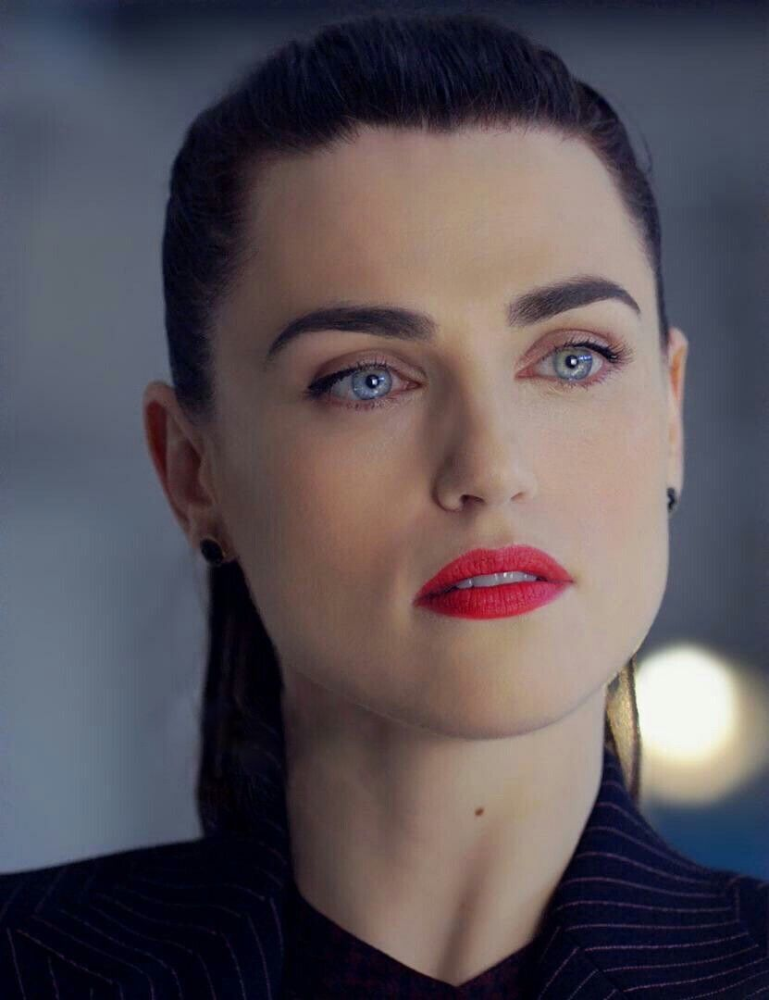
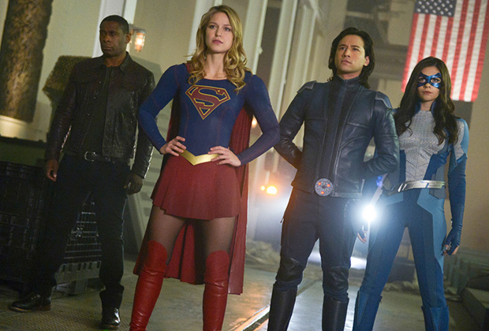

Supergirl is an American superhero television series developed by Ali Adler, Greg Berlanti and Andrew Kreisberg that originally aired on CBS and premiered on October 26, 2015. It is based on the DC Comics character Supergirl, created by Otto Binder and Al Plastino, and stars Melissa Benoist in the title role. Supergirl is a costumed superheroine who is Superman's cousin and one of the last surviving Kryptonians. The series is the third series set in the Arrowverse, sharing continuity with the other television series of the franchise. The series was officially picked up on May 6, 2015, after receiving a series commitment in September 2014, and received a full season order on November 30, 2015. Since the second season, the series has aired on The CW. The show has received generally positive reviews from critics, who have praised the creative direction, the performances, and the themes addressed. In January 2020, The CW renewed the series for a sixth season, which is set to premiere in midseason 2021 and serve as the series' final season.
Kara Zor-El was sent to Earth from Krypton as a 13-year-old by her parents Zor-El and Alura. Kara was meant to protect her infant cousin, Kal-El, but her spacecraft was knocked off course and sent into the Phantom Zone, where it stayed for 24 years. By the time the spacecraft crash landed on Earth, Kal-El had grown up and become Superman. The series begins eleven years later when the now 24-year-old Kara is learning to embrace her powers and has adopted the superheroic alias "Supergirl". Kara Zor-El, Superman's cousin who, after 12 years of keeping her powers a secret on Earth, decides to finally embrace her superhuman abilities and be the hero she was always meant to be. Thirteen-year-old Kara escaped the doomed planet Krypton with her parents' help at the same time as the infant Kal-El. Protected and raised on Earth by her foster family, the Danvers, Kara grew up in the shadow of her foster sister, Alex, and learned to conceal the phenomenal powers she shares with her famous cousin in order to keep her identity a secret. Years later at 25, Kara lives in National City assisting media mogul and fierce taskmaster Cat Grant, who just hired the Daily Planet’s former photographer, James Olsen, as her new art director. However, Kara's days of keeping her talents a secret are over when Hank Henshaw, head of a super-secret agency where her sister also works, enlists her to help them protect the citizens of National City from sinister threats. Though Kara will need to find a way to manage her newfound empowerment with her very human relationships, her heart soars as she takes to the skies as Supergirl to fight crime.
| 1. Melissa Benoist as Kara Danvers/Supergirl | 2. Mehcad Brooks as James Olsen/Guardian | 3. Chyler Leigh as Alex Danvers | 4. Jeremy Jordan as Winn Schott/Toyman | 5. David Harewood as J'onn J'onzz/Martian Manhunter | 6. Calista Flockhart as Cat Grant |
| 7. Floriana Lima as Maggie Sawyer | 8. Chris Wood as Mon-El |  9. Katie McGrath as Lena Luthor |
10. Odette Annable as Samantha Arias/Reign | 11. Jesse Rath as Querl Dox/Brainiac 5 | 12. Sam Witwer as Ben Lockwood/Agent Liberty |
| 13. Nicole Maines as Nia Nal/Dreamer | 14. April Parker Jones as Lauren Haley | 15. Azie Tesfai as Kelly Olsen | 16. Andrea Brooks as Eve Teschmacher | 17. Julie Gonzalo as Andrea Rojas/Acrata | 18. Staz Nair as William Dey |
| Episodes | First Aired | Last Aired |
|---|---|---|
| 20 | October 26, 2015 | April 18, 2016 |
In the first season, Kara is forced to reveal her powers, and becomes National City's protector.In the process, she discovers that hundreds of the criminals her mother imprisoned are hiding on Earth, including her aunt Astra and Astra's husband Non. Kara works with her adoptive sister Alex Danvers to fight these criminals, alongside the Green Martian J'onn J'onzz, her cousin's friend James Olsen, and tech genius Winn Schott.

| Episodes | First Aired | Last Aired |
|---|---|---|
| 22 | October 10, 2017 | May 22, 2018 |
In the second season, Kara and her allies deal with feuds between Earth's native populace and extraterrestrial community, and investigate the shadowy organization Project Cadmus, masterminded by Lillian Luthor, mother of Lex Luthor. Meanwhile, Kara befriends Lillian's stepdaughter, Lena Luthor, the new CEO of LuthorCorp, and struggles with romantic feelings for recent Earth arrival Mon-El, a princely survivor from Krypton's neighboring planet Daxam, whose parents wish to reclaim him. James becomes the masked vigilante Guardian; Alex begins dating Maggie Sawyer; and J'onn befriends a younger Martian, M'gann, from the White Martian race that killed his people.
| Episodes | First Aired | Last Aired |
|---|---|---|
| 23 | October 9, 2017 | June 18, 2018 |
In the third season, Kara struggles with the loss of Mon-El after he is forced to leave Earth. When Mon-El returns, he reveals that he has time-traveled to the 31st century and founded the Legion, as well as married Imra Ardeen. J'onn discovers his father M'yrnn J'onzz is alive and Alex deals with her heartbreak after breaking up with Maggie. Kara and Alex's new friend, Samantha Arias, discovers she is also a Kryptonian survivor, and begins a transformation from a loving single mother into the world-killing weapon known as Reign.
| Episodes | First Aired | Last Aired |
|---|---|---|
| 23 | October 14, 2018 | May 19, 2019 |
In the fourth season, Kara deals with a new wave of anti-extraterrestrial prejudice secretly instigated by Lex Luthor from prison, forcing her to fight for the civil and political rights of aliens. Ben Lockwood, a former college professor who suffered a series of personal tragedies at the hands of extraterrestrials, forms a human-first group called the Children of Liberty to end all aliens. Meanwhile, in the nation of Kasnia, a clone of Kara dubbed "Red Daughter" is trained by its military to fight Supergirl at Lex's request. Kara and Alex clash with the DEO's new addition, Col. Lauren Haley, who was sent to monitor the DEO's progress under Alex's direction. Col. Haley and the President try to force Supergirl to reveal her identity, and causing the feud to escalate when she refuses.

| Episodes | First Aired | Last Aired |
|---|---|---|
| 20 | October 6, 2019 | May 17, 2020 |
In the fifth season, Kara and her friends find themselves facing a new threat known as Leviathan, who sends their agent Rama Khan, a centuries-old immortal being who can bend the Earth, to kill Kara. Following a multiverse destroying Crisis, Kara adjusts to her new life on the newly created "Earth-Prime", while being forced to work under Lex and Leviathan continues their covert operations under Gamemnae.
| Episodes | First Aired | Last Aired |
|---|---|---|
| 23 | October 8, 2019 | May 12, 2020 |
To be Confirmed. On January 7, 2020, the series was renewed for a sixth and final season.